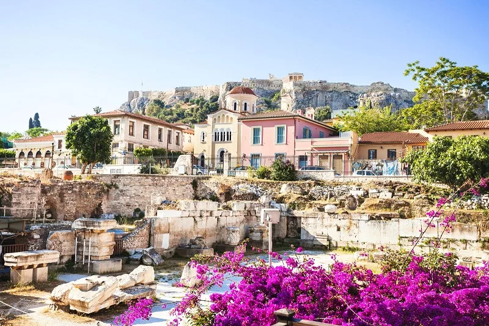
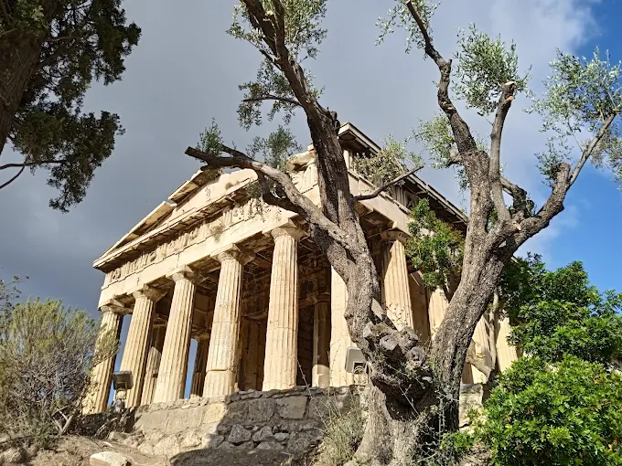

Atenas
Atenas (a pronúncia em grego é “Athína”) é a capital da Grécia e uma das cidades mais antigas do mundo, com uma história registrada que abrange mais de 3.400 anos. É conhecida como o berço da democracia e a fundação da civilização ocidental. Hoje, é uma metrópole vibrante que mistura ruínas milenares com uma vida urbana moderna, sendo um dos melhores lugares no mundo para estudar história antiga (ou começar sua jornada pelas ilhas gregas).
Características
- Berço da Civilização: Local de nascimento da democracia, da filosofia ocidental e dos Jogos Olímpicos originais.
- Patrimônio Mundial: Abriga a Acrópole, um dos complexos arquitetônicos mais importantes e influentes da história da humanidade.
- Clima Mediterrâneo: Marcada por verões quentes e secos e muita luz solar, o que torna as caminhadas ao ar livre uma característica central da cidade.
- Vibe Histórica e Moderna: Bairros antigos como Plaka convivem com grafites modernos, cafés tecnológicos e uma vida noturna agitada em Psiri.
- Centro Cultural: Repleta de museus de classe mundial, como o Museu da Acrópole e o Museu Arqueológico Nacional.
Pontos Turísticos
O Partenon (Acropolis)
O Partenon é, sem dúvida, o marco mais famoso de Atenas. Localizado no topo da colina da Acrópole, este templo dedicado à deusa Atena foi construído no século V a.C. Sua arquitetura de colunas dóricas em mármore branco foi inspirada na busca pela perfeição e harmonia. Além de sua forma imponente que domina a paisagem de toda a cidade, o templo é um símbolo da Grécia Antiga e da resistência cultural através dos séculos.
A Acrópole de Atenas é uma das atrações turísticas mais famosas do planeta. O impressionante conjunto de templos é impossível de não notar de qualquer ponto da cidade. Graças ao seu design clássico, é o modelo para grande parte da arquitetura monumental do mundo ocidental.

Concluído em 438 a.C., é famoso por suas colunas dóricas e importância histórica.
Veja o site guia.melhoresdestinos para ver mais sobre a visita
Bairro de Plaka
A entrada principal para este bairro histórico está localizada logo abaixo da encosta norte da Acrópole. Plaka é o bairro mais antigo de Atenas, conhecido como o "Bairro dos Deuses" devido à sua proximidade com os templos sagrados. A caminhada por suas ruas estreitas de paralelepípedos é um destino popular, oferecendo aos visitantes uma atmosfera charmosa de vilarejo com casas neoclássicas coloridas e buganvílias floridas.
Para quem busca a melhor experiência local, Plaka é parada obrigatória. Ela transporta os visitantes para um labirinto de lojas de artesanato, tavernas tradicionais e cafés pitorescos. É o local perfeito para observar o movimento da cidade ou saborear uma autêntica comida grega enquanto se aprecia a vista das ruínas antigas logo acima.

O charmoso bairro de Plaka, suas cores vibrantes cegam até quem está a quilômetros
Conheça mais sobre o bairro e suas belezas no mesmo site de guias
Templo de Hefesto (Hephaisteion)
O Templo de Hefesto é um dos templos gregos mais bem preservados da antiguidade. Localizado no topo da colina de Agoraios Kolonos, na Ágora Antiga de Atenas, foi construído no século V a.C. e dedicado ao deus do fogo e da metalurgia. Diferente de outros monumentos que sofreram grandes danos, este templo mantém seu teto e a maioria de suas colunas intactas, permitindo que os visitantes vejam quase exatamente como uma estrutura clássica se parecia há 2.500 anos.
O Templo de Hefesto é uma das atrações turísticas mais impressionantes para quem gosta de arqueologia. O imponente edifício de mármore pentélico é cercado por árvores e jardins, oferecendo uma paz rara no centro de Atenas. Graças ao seu excelente estado de conservação (devido ao fato de ter sido usado como igreja cristã por séculos), é o melhor lugar para entender a engenharia grega antiga.

O Templo de Hefesto, um dos mais conservados da Grécia, localizado na Ágora Antiga.
Veja detalhes históricos no site pt.thebrainchamber